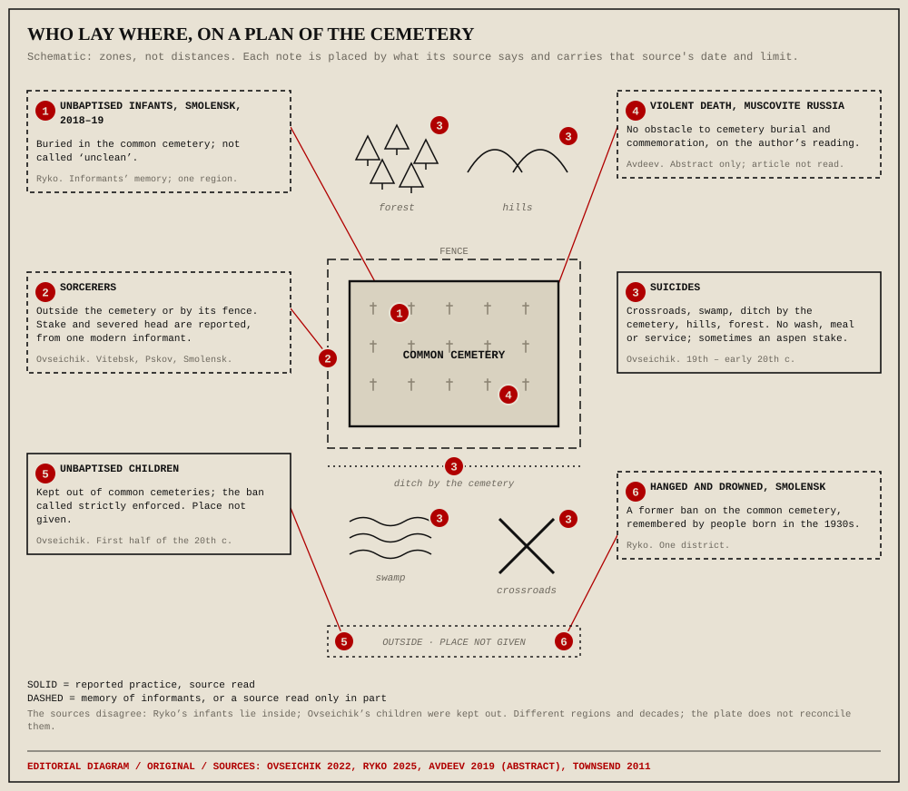
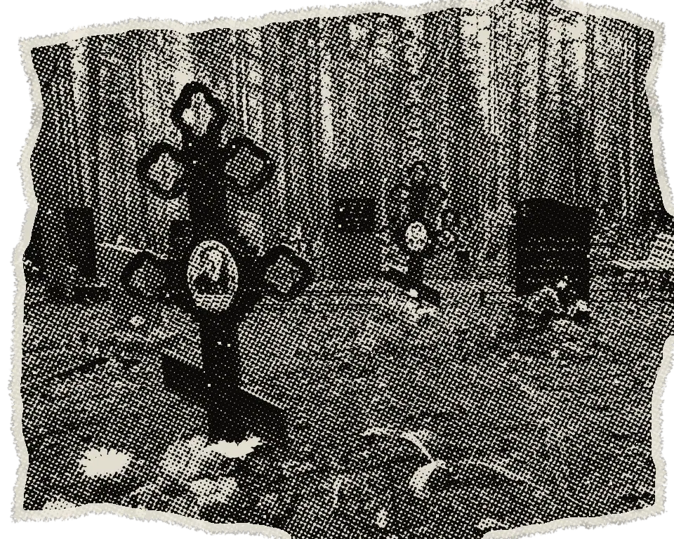

VOL. III · PLATE T · 02 / 04
THE UNQUIET DEAD
Impure dead, a scholar’s term and a dispute over its origin
Who was kept out of the common cemetery, by which source and in which decade, with a scholar’s term set apart from what informants said and a church-history challenge to the pagan-survival reading.
Records of the 19th–early 20th century; fieldwork 1990s–2019 · Belarusian-Russian borderland: Vitebsk, Pskov and Smolensk regions · Russian and Belarusian folk belief about ‘impure’ dead
T / 01
A name made by a scholar
‘Zalozhnye pokoiniki’ is a scholar’s term. Dmitry Zelenin brought it into use in 1916, taking it from the dialect of Vyatka, where it meant dead who were ‘covered over’ with brushwood, boards or stakes instead of being laid in the earth. He understood it to reflect a belief that the earth does not receive such dead, and he used it for all the ‘impure’ dead.
V. E. Ovseichik, working on the Belarusian-Russian borderland, declines to extend the word to the whole category: it does not occur in Belarusian or other traditions, and burial methods varied. The plate therefore uses ‘unquiet dead’ and ‘impure dead’ for the category and keeps ‘zalozhnye’ for what Zelenin meant by it.
T / 03
Three categories in one borderland
Ovseichik’s material, from the Vitebsk, Pskov and Smolensk regions, centres on three groups. Unbaptised children were thought unable to enter paradise and to fly at night asking to be baptised; a symbolic baptism or naming after death is widespread. They were kept out of common cemeteries, a ban the author calls strictly enforced in the first half of the twentieth century. Later records mostly call such children angels.
Suicides, in the same material, were thought to go to the devil, not to the ancestors. In the nineteenth and early twentieth centuries the body was often not washed, was buried in the clothes it died in, with no funeral meal and no church service, and sometimes marked with an aspen stake. Reported burial places include crossroads, swamps, a ditch by the cemetery, hills and forest. Respondents expected drought and storms if a suicide lay in the common cemetery.
Sorcerers were ‘impure’ whatever the manner of death, because the devil was thought to take the soul. They were buried outside the cemetery or by its fence. Radical measures are reported: exhuming the body, cutting off the head and setting it between the legs, driving an aspen stake through the body. The article does not give the number of informants for this category.
T / ZELENIN 1927
What Zelenin wrote in 1927 about the anger of the earth
In his 1927 survey Zelenin says that in the twentieth, as in the nineteenth century, only the dead regarded as unclean and dangerous were buried without a grave: mainly people who died violently, above all suicides, and those who died young, before the term set at birth. Northern Russians call them zalozhnye, ‘laid down’, from a burial in which the body is not dug in but left on the ground covered with branches (1991, p. 352). He calls this an old and undoubtedly pagan custom, which is his interpretation and is disputed below. He does not trace the word to Vyatka, as the first section of this plate does; the first statement comes from the 1916 account as read through Ovseichik, the second from the 1927 text itself, and the two are not reconciled here.
What he reports as belief is ‘the anger of the earth’. The earth refuses an unclean body, which comes back to the surface however often it is buried; the buried body does not decay, so the dead can leave the grave at night; and the earth shows its anger in spring frosts and drought that ruin the crops. He finds the last idea in the sermons of Bishop Serapion of Vladimir (died 1274) and in Maxim the Greek, who reached Moscow in 1506, and he cites the Abramka chronicle for 1159, in which Metropolitan Konstantin of Kiev ordered his own body thrown to the dogs outside the city, which made a deep impression (pp. 352–353).
The church, he says, demanded graves for all the baptised, and people dug the unclean bodies up and threw them into remote places; he names cases in sources of the thirteenth and sixteenth centuries (Vladimir, Moscow). The compromise was the ubogii dom, also called Semik commemoration; an anonymous encyclopedia entry says burial in the" tabindex="0">skudelnitsa: a pit under a light shed outside the town, where the bodies of suicides, murder victims, plague dead, vagrants and sometimes people of other faiths were laid without coffin or service, covered with matting and not with earth, and buried together at Semik. He says chronicles report temporary pits in plague years from 1215 and that the houses stood in the towns of the Muscovite state from the sixteenth century to the end of the eighteenth. After a decree of 1771, villagers again dug up such graves and threw the bodies into rivers, bogs, ravines and forests; the last trial he knows of was held in 1913 in Saratov province (pp. 353–354). Dates and cases are his; the chronicles and trial records were not seen for this edition.
By his own time, he writes, villages cared less about the method of burial than about the place: people objected to burial in the common cemeteries, which they held clean and sacred, the shared property of the ancestors, who would not want such neighbours. The drunkards among the unclean dead were believed to suck the moisture from the earth around their graves, which people used to explain drought (p. 354).
T / UST-TSILMA
Ust-Tsilma: the informants’ own list
T. I. Dronova’s 2024 article rests on interviews and observation at funerals among Russian Old Believers without priests in the Ust-Tsilma district of the Komi Republic, on family manuscripts, and on laments held in the archive of the Komi Scientific Centre. It lists whom the community counts as ‘unclean’ dead: those who died unbaptised; suicides (hanged, shot, drowned); women who died in childbirth; stillborn children; sorcerers; missing persons whose bodies were not buried, soldiers excepted; those killed in peacetime; those struck by lightning; those drowned in unclear circumstances; and those who died in the bathhouse (p. 202). The ‘clean’ are those who died old, baptised infants and youths, those who died early but had made confession, and those killed in war, counted as martyrs. The words she records for the unnatural dead are samoubivets, visel’nik, zadavlennik, utoplennik and utopshoi; zalozhnyi does not occur in the text read (p. 201).
The community’s teacher examines each suicide. Church rule forbids commemoration, but he asks whether the man was in health or ‘without mind’; in the second case the dead could be commemorated at common services and a funeral service held some years later, always with the stress that the death was ‘unclean’. Otherwise only the universal services of the parental weeks name them as ‘and those with them’, without their names, though alms may be given (pp. 202–203). The body was not to be touched with bare hands: it was dragged on hooks to a burial place outside the village, usually a low spot, and put in a pit into which went everything used, the rope, work mittens, the hook. People avoided that place. Suicides began to be buried in the cemeteries in the 1970s on the order of the village administration, which angered the Old Believers; many prayer-leaders held the cemeteries defiled, and some saw the ‘last times’ begin. Until recently such dead ‘dropped out’ of the memory of the living, and it was forbidden to speak their names; now families go to the cemetery and cense the graves but do not hold individual commemorations (p. 203).
For an unbaptised child, if the parents’ neglect was the cause, the death counted as the parents’ sin to be confessed. Some held that such souls cannot find rest, others that they are spiritually blind but not sinful and wait in a ‘southern country’ that is not hell. Relatives watched the grave mound for forty days: if the earth stayed still, or rose, it was a sign of the child’s ‘pleasing to God’ state and a six-week requiem could be sung for him as ‘nameless’; if the mound sank, the child had been harmful to people while in the womb and was not commemorated (pp. 203–204). The Old Believers here are book-readers, and an informant answered from a patristic text on those who die suddenly and in water; the teacher’s answer on a man who falls through river ice was that every untimely death must be judged separately. This is one district, one researcher, informants whom she does not name, and a community that reads and weighs written church rules, so its list is an insider’s judgment, not evidence for any wider region (pp. 201–204).
T / CHILDREN
Unbaptised and early dead children: what a Slavic survey allows for Russia
Irina Sedakova’s 2020 article in Folklore 80 surveys the death and funeral of a child across the Slavic world from archive and field data of the late nineteenth to mid-twentieth century. She says that her own records come mainly from Bulgarians in Bulgaria and in diaspora (p. 48). Almost all of what follows is therefore Slavic or Bulgarian, and only a few lines are attributed to Russian places.
Her general statement is that a child who died without baptism and a name was thought to go to hell ‘as if not born’, and that the belief that such children become evil spirits is widespread. She lists the burial places assigned to them (beneath the house, under a window, in the yard, under a tree) without separating the regions in the passage read (p. 56). For baptised children the Russian items are these: in the Russian North a thread as long as the father’s or mother’s height was put in the coffin so that the dead child would not outgrow the parent and ‘walk’ (citing Listova 2001, p. 623); in the Vologda region an egg was put under the pillow of a small child (citing Vlasova 1999, p. 392) (p. 58). Russians, citing Naumenko 1998, p. 116, hold that a child of two or three becomes an angel and one of seven goes to heaven; the fate of an eight-year-old is judged by sins (pp. 61–62).
These are second-hand citations to ethnographic compilations, and the article does not say which village or decade lies behind each. They are enough to show that the fear of the unbaptised dead was Russian as well as southern Slavic. They are not enough for a Russian map of child burial; for that the plate would need the primary regional records.
T / KEEPING THEM OUT
Two kinds of dead, and the acts that kept the unclean ones out
Svetlana Tolstaya divides the Slavic dead into two groups: the pure, who died a normal death and come back at fixed times without harming anyone, and the unclean (Russian zalozhnye), who died early or by violence, such as suicide, hanging or drowning, or who dealt with evil spirits in life. She adds that the dead of either kind might return because they were neglected, or because they worried about small children, and that the unclean visits were the ones guarded against (pp. 10–11). Her detailed protective measures come mostly from Polesie, which is not Russia: needle sewn right to left on the shroud, coffin carried out feet first through a side door or the window, a stone or branches on the grave, poppy seed and sand scattered for the dead to count until cockcrow, and the aspen stake (pp. 9–11).
For the Russian North she gives one item: after the coffin was carried out, the floor was swept and the house washed, always towards the exit (p. 10). In the same passage she says that in different Slavic traditions the benches and tables were turned over and the water was poured out, and that East Slavs left inverted pots or bowls on graves; those lines are general and name no Russian place (p. 10). Her closing section adds a larger claim, that most characters of ‘lower mythology’ are the souls of such dead, a view she traces to Zelenin’s work on the rusalka (pp. 11–12).
That last claim is disputed in the literature this atlas uses. Dynin, read for plate U, argues that the rusalka image is recent and composite and that Zelenin’s origin from the ‘pledged’ dead explains only part of it. The sentence on the plate therefore stays at what Tolstaya says about the dead, and not at what the figures of folk demonology ‘really’ are.
T / A COLLECTOR, 1903
What Maksimov wrote about suicides and the drowned
Sergei Maksimov’s Nechistaia, nevedomaia i krestnaia sila, published in 1903 by Prince Tenishev’s Ethnographic Bureau after Maksimov’s death, is a general book on spirits by a writer and collector; it gives few sources for individual items and the editors say they completed the manuscript. It is used here for statements that are short and concrete, not as a survey of practice.
On suicides he writes that pious and strict people judged one who laid hands on himself to be ‘the devil’s ram’ (chertu baran), and that the drowned and the hanged were buried, where possible, on the very spot where they had committed the sin, in a bare mound, without a cross and outside the cemetery fence, ‘so that they fall more surely into the power of the unclean’ (pp. 16–17, as marked in the online copy of the 1994 reprint). On water, he says that bruises and scratches on a drowned body showed that the person had been in the vodyanoi’s paws, and that to find a body one set a wooden bowl with three wax candles afloat, and it stopped over the place (pp. 77–78, 83–84). On the wandering of such souls he adds that the girls who died by suicide cannot turn back from the state of a rusalka, and that children smothered by their mothers in sleep passed to the ‘secret people’ and were counted lost unless the mother saved them by forty days of prayer and strict fasting (pp. 20–21, 89).
The three items agree with what the plate gets from Zelenin, Dronova and Tolstaya: a burial away from the churchyard for the self-killed and the belief that the water kept its dead. They add no place and no informant, so each is evidence for what an educated collector of the 1890s held to be the common belief, and not for a named village.
Barsov, writing about the Olonets North in 1872, records that miscarried and unbaptised children were buried outside the cemetery fence in a swamp, and sometimes under the floor of the house; that a suicide in Voezersky parish, Kargopol district, was buried five versts from the church, where passers-by usually laid stones or sticks, burning the sticks when many had gathered (a footnote credits this report to L. Malinovsky); and that those who had hanged themselves in Andoma were buried on a hill among fir trees, face down (pp. 312–313). These are two or three places, not a map, and the Church did not prescribe the acts. They match in kind what the plate has from other regions: a site apart, stones or sticks left by passers-by, a turned body.

T / 04
Walking dead and literary vampires
Ovseichik cites nineteenth- and early twentieth-century accounts (Dobrovolsky, Bogdanovich) that dead sorcerers walked, killed people and drank their blood, and adds, after Vinogradova and Levkievskaya, that such stories are rare in the East Slavic area and more typical of South Slavic vampire lore. The borderland material is mostly about where and how the impure dead were buried, not about what they did once they rose.
The upyr’ of nineteenth-century Russian fiction is another matter. One thesis abstract places the literary vampire as a device used in Russian writing from the eighteenth century on, built on older belief. The atlas keeps the two apart: the field records read for this plate do not describe a figure like the literary vampire, and nothing here is evidence for one.
T / 05
Zelenin and his critics
Zelenin’s 1916 compilation gathered reports from many provinces under one heading and read them together as a single belief: that the earth does not accept the dead of ‘unnatural’ death, who therefore stay among the living. He tied the category to the rusalki. The sources read for this plate raise three objections.
Ovseichik will not extend the word ‘zalozhnye’ beyond its Vyatka use, because it is absent from Belarusian and other traditions and because burial methods varied. Avdeev, from epitaphs and letters of church hierarchs, argues that the related superstitions are of Christian times and not pagan survivals; only his abstract was read. Baiburin’s critique of reading rites as survivals of an earlier religion is a general objection to the method, not a verdict on Zelenin’s evidence.
What remains usable is the dated record. The local reports in the compilation, such as the ravine burials on plate N and the Semik citations on plate O, are evidence of what someone wrote down, from whom and where. The unifying belief is Zelenin’s construction. Where the record is read here, it is cited by place.
T / 06
A dispute about where the rule came from
Ethnographers of the late nineteenth and twentieth centuries took such burial customs for pagan survivals. A. Avdeev argues the opposite for Muscovite Russia: from sixteenth to early eighteenth-century epitaphs and letters of church hierarchs he finds no obstacle to cemetery burial or regular commemoration of those who died violent deaths, and he holds that the related superstitions arose in Christian times.
This plate has the abstract only. It cannot say how strong Avdeev’s evidence is or how far his conclusion reaches beyond the Muscovite sources. It is placed here so that the pagan-survival reading is not left standing alone.
T / 07
A rule remembered, 2018–2019
A. Ryko’s fieldwork in the Khislavichi district of the Smolensk region found only remnants of such beliefs. Informants born in the 1930s remember that those who hanged or drowned themselves were not taken to the common cemetery; younger people say they know nothing of it and that the drowned lay in the cemetery. Unbaptised infants were not counted as ‘unclean’ there. No one now says that certain dead can return and harm the living.
Set beside Ovseichik, the two studies cover neighbouring districts and different decades of the same century, and they do not agree on unbaptised children. The author says the findings rest on memory and that it is not clear whether the trend is local.
T / 08
Who lay where, by which source
| Group | Burial reported | Source and status |
|---|---|---|
| Suicides | Outside the common cemetery: crossroads, swamp, ditch by the cemetery, hills, forest; no funeral meal or service | Ovseichik; 19th–early 20th century, borderland |
| Sorcerers | Outside the cemetery or by the fence; reported stake and severed head | Ovseichik; number of informants not given |
| Unbaptised children | Kept out of common cemeteries in the Polotsk-Pskov zone | Ovseichik; first half of the 20th century |
| Unbaptised infants (Smolensk, 2018–19) | Common cemetery; not ‘unclean’ | Ryko; informants’ memory |
| Hanged and drowned (Smolensk) | Former ban on the common cemetery, remembered by those born in the 1930s | Ryko; one district |
| Violent death, Muscovite Russia | No obstacle to cemetery burial and commemoration, on the author’s reading | Avdeev; abstract only |


Unquiet dead
On the unquiet dead: Zelenin's category (1927)
Нечистые мертвецы: категория Зеленина (1927)
Original
English translation
Excerpt Paraphrase of Zelenin § 15 on the zalozhnye (unquiet dead). The original argument is more detailed; this atlas renders the definitional core.
Zelenin's § 15 introduces the term 'zalogny' (from 'zalog', pledge or pawn) to describe the dead who are still, in a sense, owed to the living world. His central claim is that the belief in unquiet dead rests not on moral judgment but on a prematurely interrupted lifespan: the earth does not want what it is not yet due. Critics have questioned whether the term 'zalogny' was used by informants or only by Zelenin as a scholarly category.
- заложный / заложенные
- Zelenin's term for the prematurely dead who cannot be buried in consecrated ground until their natural lifespan expires. Regional informants used various terms; Zelenin unified them.
Source D. K. Zelenin, Vostochnoslavianskaia etnografiia (Russian translation, Moscow, 1991), § 15.
Rights PARAPHRASE. Zelenin died in 1954; original published 1927. This atlas paraphrases.
Apparatus sources · related plates · terms
Sources for this plate
- ovseichik2022 Ovseichik, V. E. (Auseichyk, U.) — «Нечистые» покойники в представлениях населения белорусско-русского (Полоцко-Псковского и Витебско-Смоленского) пограничья (2022)
- ryko2025 Ryko, A. — Funeral Rites in the Russian-Belarusian Borderland: Traditions and Innovations (2025)
- avdeev2019 Avdeev, A. — Суеверия, погребальные обряды и древнерусская эпиграфика (2019)
- townsend2011 Townsend, D. A. — From Upyr' to Vampire: The Slavic Vampire Myth in Russian Literature (2011)
- zelenin1916 Zelenin, Dmitry K. — Очерки русской мифологии. Вып. 1: Умершие неестественною смертью и русалки (1916)
- baiburin1993 Baiburin, Albert Kashfullovich — Ritual v traditsionnoi kul’ture (1993)
- zelenin1927 Zelenin, Dmitry K. — Vostochnoslavianskaia etnografiia (Russian translation of Russische (Ostslavische) Volkskunde, Berlin–Leipzig 1927), transl. K. D. Tsivina (1991 (German original 1927))
- dronova2024 Dronova, T. I. — Tema smerti v kartine mira staroverov-bespopovtsev Ust’-Tsil’my (The theme of death in the world picture of the priestless Old Believers of Ust-Tsilma) (2024)
- sedakova2020 Sedakova, Irina — Unlived Life: The Death and Funeral of a Child in Slavic Traditional Culture (2020)
- dynin1994 Dynin, V. I. — Nekotorye osobennosti mifologicheskogo obraza rusalki u vostochnykh slavian (1994)
- tolstaya2024 Tolstaya, Svetlana M. — The Living and the Dead in Slavic Folk Culture: Modes of Interaction between Two Worlds (2024)
- maksimov1903 Maksimov, S. V. — Nechistaia, nevedomaia i krestnaia sila (1903)
- barsov1872 Barsov, Elpidifor Vasil’evich — Prichitaniia Severnogo kraia (1872–1886)
- bre-semik Bolshaya rossiiskaya entsiklopediya (online edition), unsigned entry — Семик (n.d.)
URLs, access dates and limitations are in the bibliography.
Related plates
Terms in this plate
Citation
Archaeology of Russian Death. Plate T: THE UNQUIET DEAD. Impure dead, a scholar’s term and a dispute over its origin // An Atlas of Material Culture and Ethnography. 2026. URL: https://DmitryLeLeE.github.io/rus_death/plates/t-unquiet-dead.html.